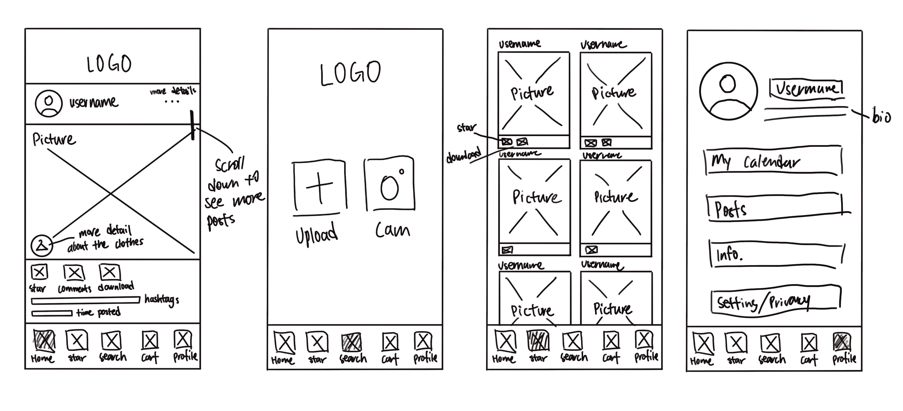
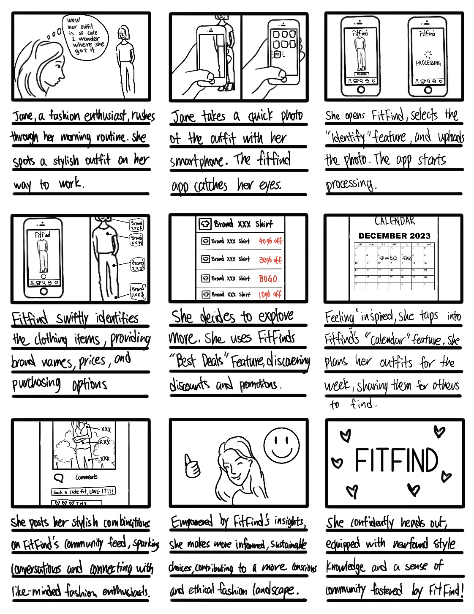
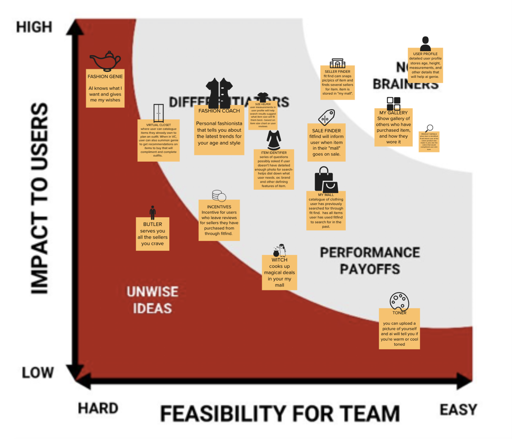
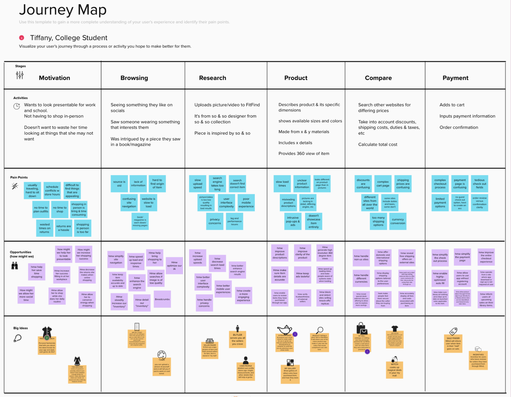
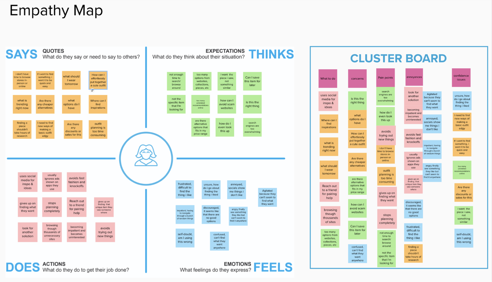
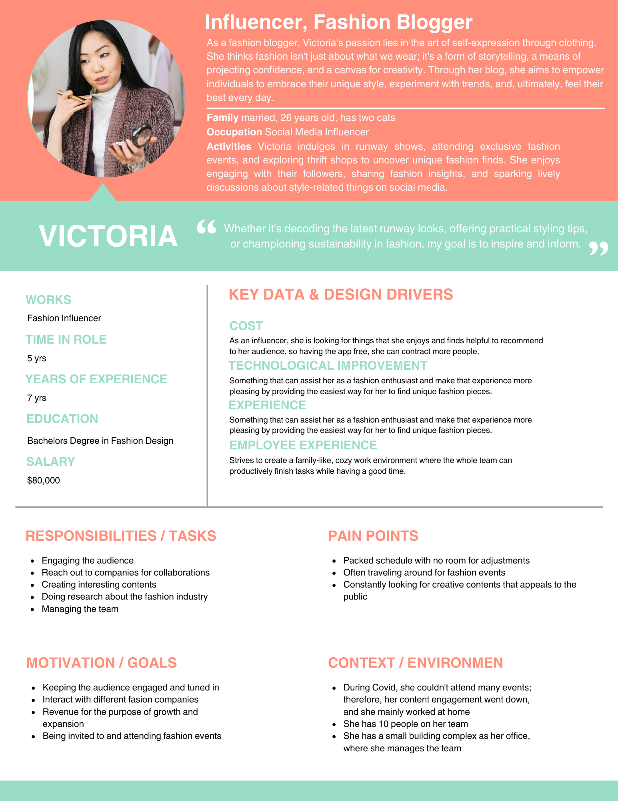
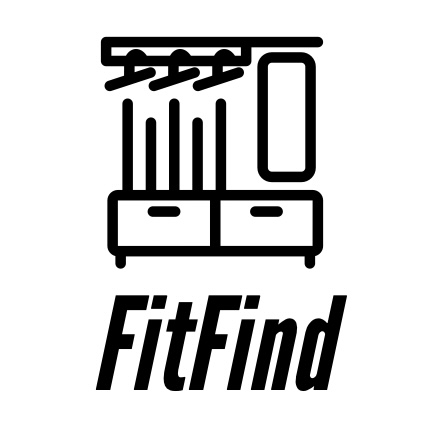

FitFind
What is FitFind
Discover the brand of any fashion item effortlessly by using our app.
Simply snap a photo of your outfit with the Fitfind cam or choose one from your album, and let our app find not only the brand but also the best online places to grab it!
Consumers who prefer shopping in-store still shop online
Did you know over half of consumers prefer shopping in store, yet 76% shop online?
“Smartphones are slowly becoming the preferred way to order online” —Fox
How does Fitfind differ from other competition?
- Recognition and Identification: The app utilizes cutting-edge artificial intelligence and image recognition technology to identify clothing and accessories accurately.
- Comprehensive Shopping Experience: While other search engines may provide information on fashion items, FitFind takes it a step further by not only identifying the brand but also finding the best deals for the items.
- Personalized Outfit Planning: The Fitplanner feature allows users to plan their outfits for the week. This innovative approach helps users organize their wardrobe, encouraging thoughtful curation of their style.
- Social Sharing: Users can post their outfits, share their style with others, and tag specific items.
Low Fidelity Prototype
Storyboard
Process
Journey Map
Empathy Map
User Persona
Ultimate Goal of FitFind
It empowers individuals to become more informed and conscious consumers, while also promoting a sense of community and inspiration within the fashion world.
